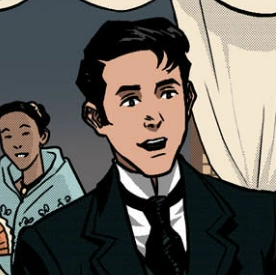
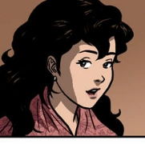
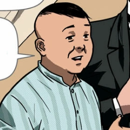
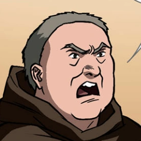
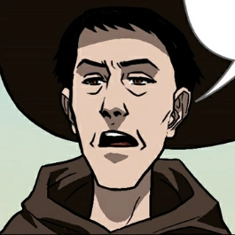
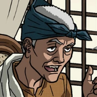

MAIN CHARACTERS OF NOLI ME TANGERE |
|  |
Juan Crisostomo Ibarra y Magsalin
Ibarra) |
- Son of Don Rafael Ibarra
- He is a smart, rich and idealistic man
- Just returned to the Philippines after studying in Europe
for 7 years
- His wealth came from his late father
- Fiancee of Maria Clara
|
|  |
Maria Clara de los Santos y Alba
(Maria Clara) |
- Daughter of Kapitan Tiago
- She was a sweet, kindhearted and woman
- This made her loved by everyone in their town, San Diego
- Loved her father and aunt, Tia Isabel, very deeply
ultimately choosing them over Ibarra
- Fiancee of Ibarra
|
|  |
Don Santiago de los Santos
(Kapitan Tiago) |
- Father of Maria Clara
- He had a round and short body while having
a white-ish skin tone
- Her late wife is Doña Pia Alba
- He was wealthy which allowed him to have close
connections to the elites of San Diego
- Good Friends with Ibarra's father, Don Rafael
|
|  |
Damaso Verdolagas
(Padre Damaso) |
- Curate (Kura) of San Diego
- He was a harsh, rude and arrogant friar and
often physically abused Filipinos
- He was also considered to be powerdul due to
his social status of being a friar
- Disliked and mistread the Filipinos
- Didn't like the idea of Maria Clara
being married to Ibarra
|
|  |
Bernardo Salvi
(Padre Salvi) |
- The new curate of San Diego after Padre Damaso
was relocated to a new town
- Has a rivalry with the town's alferez
- He had a rather thin body and looked younger
- He also didn't physically abuse the Filipinos
- He can be seen happy whenever he sees people
carrying rosaries
|
|  |
Don Anastasio
(Pilosopo Tasio/Tasiong Baliw) |
- To the educated, he's known as "Pilosopo Tasio (Philosopher Tasio)"
- To the uneducated, he's known as "Tasiong Baliw (Crazy Tasio)"
- He was an intelligent man, however, most people
in San Diego misinterpreted this as him being crazy
- Had a wealthy mother and was able to study
- Studied at Colegio de San Jose
- Lost his wealth on books after his wife died
|